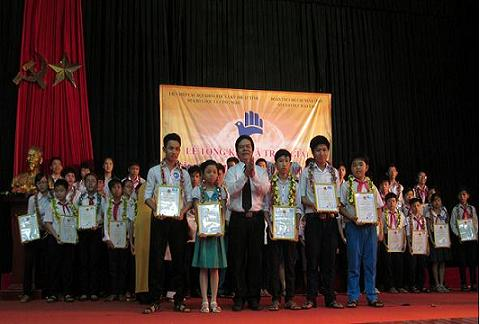
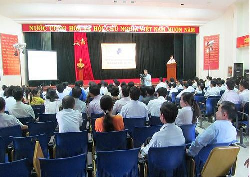
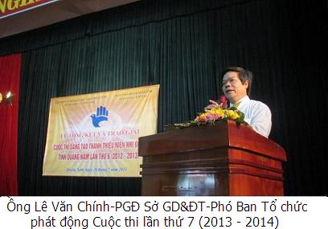

45 mô hình, sản phẩm đạt giải Cuộc thi sáng tạo thanh thiếu niên, nhi đồng tỉnh lần thứ 6

Lần cập nhật cuối lúc Thứ ba, 17 Tháng 9 2013 07:52 Viết bởi Administrator Thứ hai, 26 Tháng 8 2013 15:10
Ban Tổ chức đã trao 45 giải cho 45 đề tài, mô hình, sản phẩm gồm 05 giải nhất, 10 giải nhì, 10 giải ba và 20 giải khuyến khích tại Lễ Tổng kết và Trao giải Cuộc thi sáng tạo thanh thiếu niên, nhi đồng tỉnh Quảng Nam lần thứ 6 (2012 - 2013) được diễn ra tại TP.Tam Kỳ vào sáng ngày 26/7/2013.
Cuộc thi do Liên hiệp các hội Khoa học và Kỹ thuật tỉnh chủ trì, phối hợp với Sở Giáo dục và Đào tạo, Sở Khoa học và Công nghệ tổ chức.Tại Cuộc thi năm nay, trên toàn tỉnh có 646 mô hình, sản phẩm tham dự. Sau khi tổ chức sơ tuyển ở cấp huyện đã chọn ra 215 mô hình, sản phẩm gửi dự thi ở cấp tỉnh. Số lượng mô hình, sản phẩm tăng hơn nhiều so với năm trước.

Cũng theo Ban Tổ chức Cuộc thi, bắt đầu từ Cuộc thi năm nay, UBND tỉnh đã thống nhất cho tổ chức Cuộc thi thành 02 cấp (cấp huyện và cấp tỉnh) nhằm khuyến khích khả năng sáng tạo nhiều hơn nữa của các em trên toàn tỉnh.
Nhiều mô hình, sản phẩm của các em đạt giải lần này có sự sáng tạo và đầu tư cao, có khả năng ứng dụng cao và thân thiện với môi trường như "Sản phẩm tẩy rửa từ bồ kết" của em Lê Thị Ý Nhi, lớp 12 trường THPT chuyên Nguyễn Bỉnh Khiêm – TP.Tam Kỳ, "Phần mềm quản lý học sinh" của em Lê Bảo Hiệp, lớp 5 –Trường Tiểu học Trần Quốc Toản – TP Tam Kỳ; hay các mô hình, sản phẩm mà chúng ta rất quan tâm như "Mô hình nhà chống động đất" của em Nguyễn Quang Hạ, lớp 11 Trường THPT Nguyễn Hiền, Duy Xuyên, mô hình "Robot phá bom điện tử" của em Đoàn Lê Công Khang, lớp 9, Trường THCS Quang Trung, Tiên Phước.

Tại Lễ Tổng kết và trao giải Cuộc thi, Ban Tổ chức đã khen thưởng 7 tập thể và 9 cá nhân có thành tích xuất sắc trong công tác tuyên truyền, tổ chức Cuộc thi tỉnh lần thứ 6 (2012 - 2103). Đồng thời, Ban Tổ chức phát động Cuộc thi tỉnh lần thứ 7 (2013 - 2014)

itnbk.edu.vn- itnbk.edu.vn
- 09/09/2013 08:41 - Ngành Giáo dục Quảng Nam tưng bừng khai giảng năm …
- 05/09/2013 22:12 - Dự lễ khai giảng năm học mới, Bí thư Tỉnh ủy Nguyễ…
- 04/09/2013 06:53 - Phan Thế Hoàng - gương mặt tài năng
- 28/08/2013 09:52 - Những thầy thuốc tương lai
- 27/08/2013 13:27 - Chinh phục đam mê
- itnbk.edu.vn
- 23/08/2013 14:23 - Nữ sinh xứ Quảng vinh danh tại ĐH Harvard
- 23/08/2013 09:40 - Chị em Hiền - Hòa
- 23/08/2013 09:33 - Cho những ngày sau
- 17/04/2013 09:21 - Thủ lĩnh trẻ tương lai
- 27/02/2013 08:03 - Tăng cường các biện pháp chống tiêu cực trong Kì t…